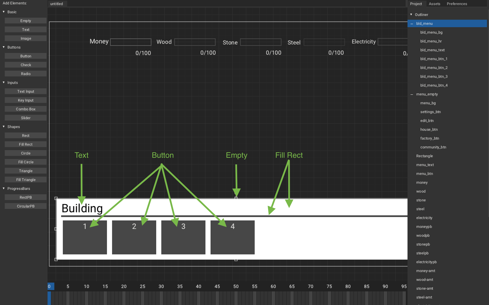
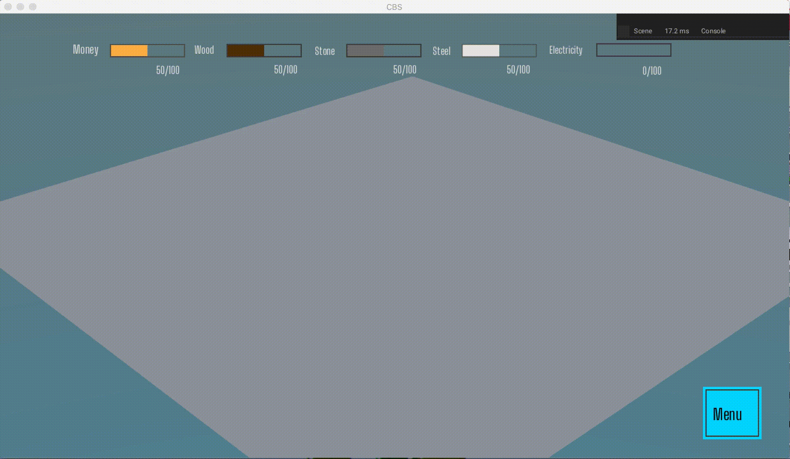

User Interface (UI)
We will create UI in which player will have to rely less on keybinds, that is we will create menu, which will let use spawn any building type of any category easily, create other menus such as settings or layout edit and also interact with buildings with 3D UI.
This will be split in 2 parts:
- Main Menu UI: This will have placing of building from menu, settings and layout edit.
- 3D Menu UI: This will 3D UI that interact with building (such as moving, removing, etc).
Main Menu UI
We will be creating main menu UI, we should be able to select building that we desire to place and also able to access other things such as settings, layout edit, etc.
Let's get started!
-
Open
MainCanvasinArmory2Dthat was created in previous tutorial and add some elements:Empty:menu_empty: We will use this as parent, so that we can make child element visible and invisible easily.
Text:menu_text: We will use this as label for our menu button.
Button:settings_btn: Toggle settingsedit_btn: Go in edit layout modehouse_btn: Toggle house building menufactory_btn: Toggle factory building menucommunity_btn: Toggle community building menu
Rect:menu_rect: Just for style
Fill Rect:menu_bg: act as background for menu buttons
-
Now parent following elements to
menu_empty:menu_bgsettings_btnedit_btnhouse_btnfactory_btncommunity_btn
-
Now add events to buttons:
settings_btn:settings_btnedit_btn:edit_btnhouse_btn:house_btnfactory_btn:factory_btncommunity_btn:community_btn

To parent any element, select the child element and the right click-hold the element and left click the parent element.
Now to add Main menu hiding and showing:
MainMenuController.hx
package arm;
import armory.trait.internal.CanvasScript;
import armory.system.Event;
import arm.WorldController;
class MainCanvasController extends iron.Trait {
static var maincanvas:CanvasScript;
var world = WorldController;
//State of menu, 0 -> closed, 1 -> opened
var menuState = 0;
public function new() {
super();
notifyOnInit(init);
notifyOnUpdate(updateCanvas);
}
function init() {
maincanvas = new CanvasScript("MainCanvas", "Big_shoulders_text.ttf");
maincanvas.setCanvasVisibility(true);
//Set menu_empty to invisible
maincanvas.getElement("menu_empty").visible = false;
//On 'menu_btn' event
Event.add("menu_btn", function(){
//If closed
if (menuState == 0){
// Set menu_empty to visible
maincanvas.getElement("menu_empty").visible = true;
// menu is open
menuState = 1;
//If opened
}else if (menuState == 1){
//Set menu_empty to invisible
maincanvas.getElement("menu_empty").visible = false;
// menu is close
menuState = 0;
}
});
}
function updateCanvas() { ~ }
function updatePB(){ ~ }
function updateAmount(){ ~ }
}
Code Explanation
- We first set menuState to closed when declared
- Every time we receive
menu_btnevent(i.e.,menu_btnis pressed). We check if menu is closed, if it is then we showmenu_empty(i.e, show all menu buttons) and setmenuStateto opened. Else ifmenu_btnis open than we do opposite.
On playing, you should get:

Now, we will add building menu. Here you should be able to select whatever building you want to spawn.
-
Add more element to
MainCanvas:Empty:bld_menu: We will use this as parent, so that we can make child element visible and invisible easily.
Text:bld_menu_text: We will use this as label for our building category.
Button:bld_menu_btn_1: Spawn 1st building type from given categorybld_menu_btn_2: Spawn 2st building type from given categorybld_menu_btn_3: Spawn 3st building type from given categorybld_menu_btn_4: Spawn 4st building type from given category
Fill Rect:bld_menu_bg: Just for stylebld_menu_hr: Just for style
-
Now parent following elements to
menu_empty:bld_menu_bgbld_menu_hrbld_menu_textbld_menu_btn_1bld_menu_btn_2bld_menu_btn_3bld_menu_btn_4
-
Now add events to buttons:
bld_menu_btn_1:bld_menu_btn_1bld_menu_btn_2:bld_menu_btn_2bld_menu_btn_3:bld_menu_btn_3bld_menu_btn_4:bld_menu_btn_4

We will break building type in 3 categories, that is, House, Factory, Community.
Now, let's get to code.
MainCanvasController.hx
package arm;
~
class MainCanvasController extends iron.Trait {
static var maincanvas:CanvasScript;
var world = WorldController;
var bld = BuildingController;
var menuState = 0;
//0 -> no button, 1 -> Settings button, 2 -> Edit layout button
//3 -> House button, 4 -> Factory button, 5 -> community button
var bldMenuBtn = 0;
// 0 -> closed bld menu, 3 -> House bld menu, 4 -> Factory bld menu, 5 -> Community bld menu
var bldMenuState = 0;
public function new() { ~ }
function init() {
~
Event.add("menu_btn", function(){
if (menuState == 0){
maincanvas.getElement("menu_empty").visible = true;
menuState = 1;
// Close/reset bld menu
bldMenuState = 0;
}else if (menuState == 1){ ~ }
});
//Check bldMenuState and set bldMenuState to corresponding building.
Event.add("house_btn", function(){ bldMenuBtn = 3; bldMenuState == 3 ? bldMenuState = 0 : bldMenuState = 3;});
Event.add("factory_btn", function(){ bldMenuBtn = 4; bldMenuState == 4 ? bldMenuState = 0 : bldMenuState = 4;});
Event.add("community_btn", function(){ bldMenuBtn = 5; bldMenuState == 5 ? bldMenuState = 0 : bldMenuState = 5;});
//Check when bld_menu_btn_n, and spawn building corresponding to category and type
Event.add("bld_menu_btn_1", function(){
switch (bldMenuState){
case 3: bld.spawnBuilding(1);
case 4: bld.spawnBuilding(5);
case 5: bld.spawnBuilding(2);
}
});
Event.add("bld_menu_btn_2", function(){
switch (bldMenuState){
case 4: bld.spawnBuilding(6);
case 5: bld.spawnBuilding(3);
}
});
Event.add("bld_menu_btn_3", function(){
switch (bldMenuState){
case 4: bld.spawnBuilding(7);
case 5: bld.spawnBuilding(4);
}
});
Event.add("bld_menu_btn_4", function(){
switch (bldMenuState){
case 4: bld.spawnBuilding(8);
}
});
}
function updateCanvas() {
updatePB();
updateAmount();
//Check if bldMenuBtn and set text and visibility according to it.
if(bldMenuState == 3 || bldMenuState == 4 || bldMenuState == 5){
maincanvas.getElement("bld_menu_text").text = getCategoryFromInt(bldMenuBtn);
maincanvas.getElement("bld_menu").visible = true;
}
if (bldMenuState == 0 || menuState == 0){
maincanvas.getElement("bld_menu").visible = false;
}
//Switch between bldMenuBtn and set button's text and visibility.
switch (bldMenuState){
case 3:
maincanvas.getElement("bld_menu_btn_1").text = "House";
maincanvas.getElement("bld_menu_btn_1").visible = true;
maincanvas.getElement("bld_menu_btn_2").visible = false;
maincanvas.getElement("bld_menu_btn_3").visible = false;
maincanvas.getElement("bld_menu_btn_4").visible = false;
case 4:
maincanvas.getElement("bld_menu_btn_1").text = "Sawmill";
maincanvas.getElement("bld_menu_btn_1").visible = true;
maincanvas.getElement("bld_menu_btn_2").text = "Quarry";
maincanvas.getElement("bld_menu_btn_2").visible = true;
maincanvas.getElement("bld_menu_btn_3").text = "Steelworks";
maincanvas.getElement("bld_menu_btn_3").visible = true;
maincanvas.getElement("bld_menu_btn_4").text = "Powerplant";
maincanvas.getElement("bld_menu_btn_4").visible = true;
case 5:
maincanvas.getElement("bld_menu_btn_1").text = "Park";
maincanvas.getElement("bld_menu_btn_1").visible = true;
maincanvas.getElement("bld_menu_btn_2").text = "Garden";
maincanvas.getElement("bld_menu_btn_2").visible = true;
maincanvas.getElement("bld_menu_btn_3").text = "Sport.C.";
maincanvas.getElement("bld_menu_btn_3").visible = true;
maincanvas.getElement("bld_menu_btn_4").visible = false;
}
}
function updatePB() { ~ }
function updateAmount() { ~ }
//Get building category from int
static function getCategoryFromInt(int: Int):String {
var type = "";
switch (int){
case 3: type = "House";
case 4: type = "Factory";
case 5: type = "Community";
}
return type;
}
}
Code Explanation
- In
menu_btnevent, We will first check if menu is opened, if so than we close/reset building menu. - In
<category>_btnevent, We will first setbldMenuBtnto its corresponding. We will than check ifbldMenuStateis same as corresponding button, if so then we setbldMenuStateto 0 or else setbldMenuStateto it corresponding button. - In
updateCanvas(), we will switch betweenbldMenuStateand set buttons text and visibility according to it. - In
updateCanvas(), we will check ifbldMenuStateequals to any building category. If so, than setbld_menu_texttext and setbld_menuvisible - In
updateCanvas(), we will check ifbldMenuStateormenuStateis closed. If so, than setbld_menuto invisible. - In
getCategoryFromInt(), we will switch between the int and then return corresponding text. - In
bld_menu_btn_<n>event, we will switch betweenbldMenuStateand spawn building corresponding to category and type.
Now, you should get like:
